Boerenkaas
15 kazen
Meer informatie
Zoek naar kazen, recepten of artikelen...

Ontdek de wereld van kaas met jouw persoonlijke smaakprofiel. Verrijk je kennis en ontdek nieuwe kazen, recepten en inspiratie.
Maak je eigen profielEr zijn zo ontzettend veel soorten kaas, dat het soms lastig is om de juiste te vinden. In de kaascatalogus word je meegenomen in de zoektocht naar de perfecte kaas, bij het perfecte moment.
15 kazen

18 kazen
4 kazen

47 kazen
Proef één van onze 300+ recepten

15 minuten
Borrel
50 minuten
Diner

15 minuten
Diner
10 minuten
Lunch
Neem een kijkje op ene van onze partnerpagina's op deze website en laat je inspireren!

Koning der kazen
Smaakvol & gezond
Op basis van vragen samengesteld door onze kaas experts stellen wij jouw persoonlijke smaakprofiel samen.